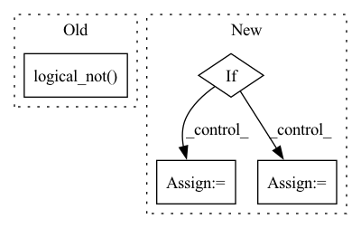

Pattern ID :3835
Before Change
bbox[:, 3] - bbox[:, 1] + 1)
for k, (min_area, max_area) in enumerate(area_ranges):
num_gts[k] += np.sum(
np.logical_not( cls_gt_ignore[j])
& (gt_areas >= min_area) & (gt_areas < max_area))
// sort all det bboxes by score, also sort tp and fp
cls_dets = np.vstack(cls_dets)
num_dets = cls_dets.shape[0]After Change
cls_dets, cls_gts, cls_gts_ignore = get_cls_results(
det_results, annotations, i)
// choose proper function according to datasets to compute tp and fp
if dataset in ["det", "vid"]:
tpfp_func = tpfp_imagenet
else:
tpfp_func = tpfp_default
// compute tp and fp for each image with multiple processes
tpfp = pool.starmap(
tpfp_func,In pattern: SUPERPATTERN
Frequency: 3
Non-data size: 4
Instances Fragment ID: 14556558
Project Name: wxinlong/solo
Commit Name: 47bab544eca31aaca7e99a402568b8c29292f74b
Time: 2019-12-31
Author: chenkaidev@gmail.com
File Name: mmdet/core/evaluation/mean_ap.py
M Class Name: AnonimousClass
N Class Name: AnonimousClass
M Method Name: eval_map(7)
N Method Name: eval_map(8)
M Parent Class:
N Parent Class:
M File Name: mmdet/core/evaluation/mean_ap.py
N File Name: mmdet/core/evaluation/mean_ap.py
M Start Line: 222
M End Line: 327
N Start Line: 271
N End Line: 386
Before Change
factor = torch.minimum(torch.full_like(new_factor, self.max_factor), new_factor)
if prev_rejected:
factor = torch.minimum(torch.ones_like(factor), factor)
not_t1_achieved = torch.logical_not( t1_achieved)
h[not_t1_achieved] *= factor[not_t1_achieved]
else:
After Change
accepted = errnorm < 1
// adjust the step size
if accepted and not t1_achieved:
if errnorm == 0:
factor = self.max_factor
else:
factor = min(self.max_factor, self.step_mult * errnorm ** self.error_exponent)
if prev_rejected:
factor = min(1.0, factor)
h *= factor
elif not accepted:
factor = max(self.min_factor, self.step_mult * errnorm ** self.error_exponent)
h = hstep * factor
Fragment ID: 14556551
Project Name: xitorch/xitorch
Commit Name: d91c4d6e56fb40b9f91fda53f69871e97dcb6abe
Time: 2021-12-30
Author: firman.kasim@gmail.com
File Name: xitorch/_impls/integrate/ivp/adaptive_rk.py
M Class Name: RKAdaptiveStepSolver
N Class Name: RKAdaptiveStepSolver
M Method Name: _single_step(3)
N Method Name: _single_step(3)
M Parent Class: object
N Parent Class: object
M File Name: xitorch/_impls/integrate/ivp/adaptive_rk.py
N File Name: xitorch/_impls/integrate/ivp/adaptive_rk.py
M Start Line: 125
M End Line: 165
N Start Line: 85
N End Line: 122
Before Change
xqinside = xqnorm % (1.0 + 1e-14) // to include 1 in the inside
if extrap == "mirror":
xqnorm_int = xqnorm.long()
odd_mask = torch.logical_not( (xqnorm_int % 2 == 1) ^ (xqnorm > 0))
xqinside[odd_mask] = 1.0 - xqinside[odd_mask]
return xqinside * (xmax - xmin) + xmin
def get_extrap_val(xqextrap, y, extrap):After Change
def get_extrap_pos(xqextrap, extrap, xmin=0.0, xmax=1.0):
// xqextrap: (nrq,)
xqnorm = (xqextrap - xmin) / (xmax - xmin)
if extrap == "periodic":
xqinside = xqnorm % 1.0
elif extrap == "mirror":
xqnorm = xqnorm.abs()
xqnorm_ceil = xqnorm.long() + 1
xqinside = (2*(xqnorm_ceil // 2) - xqnorm) * (1 - (xqnorm_ceil % 2.0) * 2)
elif extrap == "bound":
xqinside = torch.clamp(xqnorm, 0.0, 1.0)
else:
raise RuntimeError("get_extrap_pos only work for periodic and mirror extrapolation")
return xqinside * (xmax - xmin) + xmin Fragment ID: 14556547
Project Name: xitorch/xitorch
Commit Name: a6db5e5a7dae111f135b0948a85e6a6ab638f223
Time: 2020-09-20
Author: firman.kasim@gmail.com
File Name: xitorch/_impls/interpolate/extrap_utils.py
M Class Name: AnonimousClass
N Class Name: AnonimousClass
M Method Name: get_extrap_pos(4)
N Method Name: get_extrap_pos(4)
M Parent Class:
N Parent Class:
M File Name: xitorch/_impls/interpolate/extrap_utils.py
N File Name: xitorch/_impls/interpolate/extrap_utils.py
M Start Line: 5
M End Line: 11
N Start Line: 5
N End Line: 16